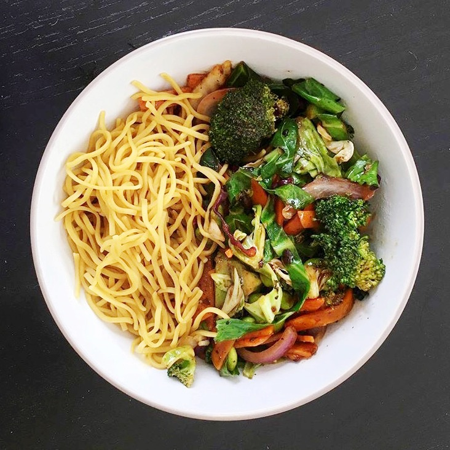

Vegetable Stir Fry

Description
A colorful vegetable stir-fry with noodles, featuring a mix of fresh vegetables like peppers, carrots, and
broccoli, tossed in a savory soy-based sauce. Quick to prepare and packed with flavor, it's a satisfying,
healthy meal perfect for a busy weeknight.
Ingredients
- 75g egg or rice noodles
- mixed stir fry vegetables (I used pepper, broccoli, carrot and onion)
- 1 clove of garlic
- 1 small piece of ginger
- 1 spring onion
- 2 tbsp soy sauce
- vegetable oil (for cooking)
Steps
- Grab a medium sized pan, add water and get it on the heat to boil. Add the noodles and cook following
the timings onthe back of the packet.
- Slice up all the vegetables that you want to include into strips or chunks. You're also going to need to
chop up thegarlic and ginger.
- Put a frying pan (or a wok if you've got one) on a high heat and add a drizzle of oil. Throw in the
garlic and gingerand let it sizzle for a minute before throwing in the rest of the veggies. Cook until
the vegetables have softened (probably going to take about 5 minutes).
- Drain the cooked noodles and add them to the pan with the vegetables. Add a splash of soy sauce and mix
it all up.